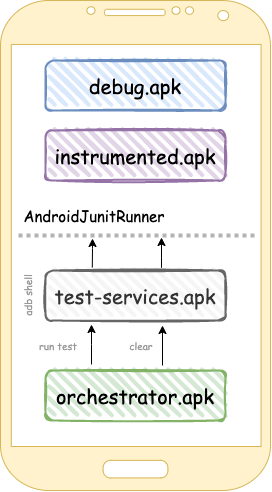
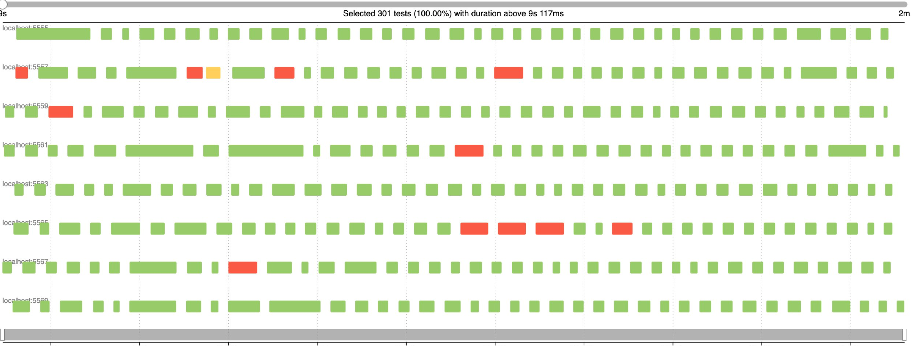

State clearing
This question appears as soon as you need to run more than 1 ui test.
Problem:
We run Test1, it performs some http requests, saves some data to files and database.
When Test1 finished, Test2 will be launched.
However, Test1 left some data on the device which can be a reason of Test2 failing.
Solution — clear data before each test
1. Within process clearing
In this case we don't kill our application process.
1.1 Component from a real code base
@Before
fun setUp() {
DI.provideLogoutCleanerInteractor().clear()
}
The same component which clears data (For instance, while logout). It should honestly clear everything in application: Databases, Files, Preferences and Runtime cache and should be executed before each test.
Danger
This solution is a bottleneck and it's better to avoid it at all. If LogoutCleaner broken, all of the tests will be failed
1.2 Clear internal storage
All cache in android application stored in internal storage: /data/data/packagename/
This storage — our application sandbox and can be achieved without any permission.
Common idea: to avoid usage of components from real code base and use some test rules, which do the job for us.
@get:Rule
val clearPreferenceRule = ClearDatabaseRule()
@get:Rule
val clearFilesRule = ClearFilesRule()
@get:Rule
val clearFilesRule = ClearPreferencesRule()
They have already been implemented in Barista library, you can find them here
Warning
This solution won't work on 100% for you:
- You may have runtime cache, which is also can affect your tests
- Test or application process can be crashed. It prevents launch of the next tests
1.3 Conclusion
➕ Fast implementation
➕ Fast execution in the same process
➖ Don't have any guarantee that your app will be cleared properly
➖ Application or Test process killing will break tests execution
➖ Can be a bottleneck
Use these solutions only as a temp workaround, because it won't work on perspective in a huge projects
2. Clear package data
Idea — simulate the same behavior when user press clear data in application settings.
Application process will be cleared in that state, our application will be started in a cold start.
2.1 Orchestrator
Basically it is possible to have cleared state, if you would execute your tests like this:
adb shell am instrument -c TestClass#method1 -w com.package.name/junitRunnerClass
adb pm clear
adb shell am instrument -c TestClass#method2 -w com.package.name/junitRunnerClass
adb pm clear
Each test should be executed in isolated instrumented process and junit reports should be merged into a big one when all tests finished.
That's the common idea of Orchestrator.
It's just an apk which consist of
only several classes
and which does test run and clear for us as the same way as described above.
Besides application.apk and instrumented.apk, orchestrator should be installed on the device.
However, it's not the end.
Orchestrator should somehow execute adb commands. Under the hood, it
uses special services
It's just shell client which is also represented as an apk and should be installed to the device.

An official documentation and guide how to start with Orchestrator
Warning
Despite the fact that it does the job, this solution looks overcomplicated:
- We need to install +2 different apk to each emulator
- We delegate this job to the device instead of host machine.
Devices are less reliable than host pc
2.2 Other solutions
This is also possible to implement by usage of 3rd party test runners, like Marathon, Avito-Runner or Flank. Marathon and Avito-Runner clear package data without an orchestrator. They delegated this logic to host machine.
2.3 Conclusion
➕ Does the job for us in 100%
➖ Slow execution (can take 10+ seconds and depends on apk size)
➖ Orchestrator — over-complicated
Each adb pm clear takes some time and depends on apk size. Below you may see some gaps between the tests which
represents such delay

Success
Only package clear does guarantee for you that data has been cleared. Marathon and Avito-Runner provide the easiest way to clear application data.
- You can set it just by one flag in configuration
- They don't use orchestrator under the hood